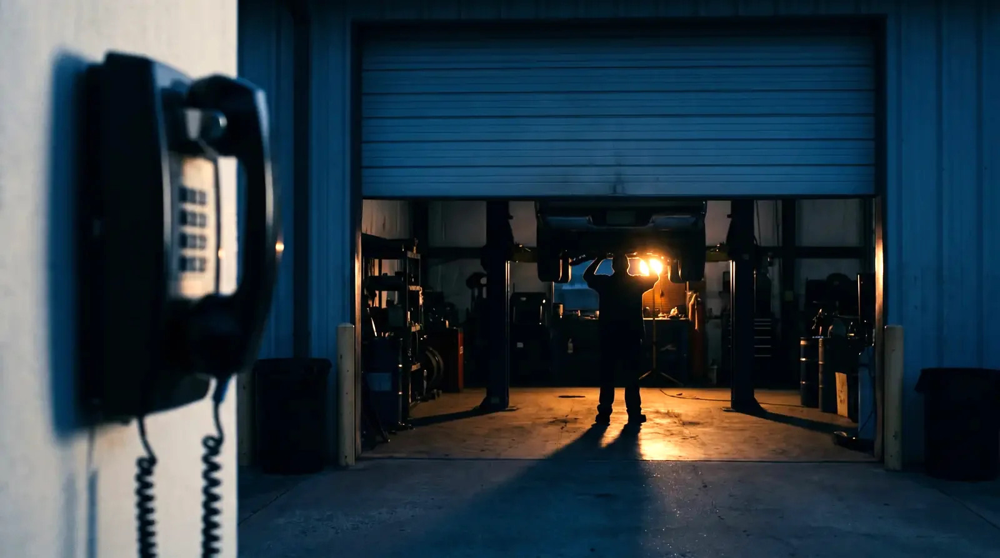

01ENTRY
The Front Door
Examine where spam can be screened and whether the desk and a designated mobile can ring together, so a real caller has a clear first route.
Screen → Ring → Answer
Choose your line of work
Auto Repair / 01
A customer who needs a repair today has another shop down the street.
WHAT DASSA SOLUTIONS EXAMINES / CALL FLOW
For auto repair, the first minutes of the day can decide whether a real caller reaches the shop.
Examine where spam can be screened and whether the desk and a designated mobile can ring together, so a real caller has a clear first route.
Screen → Ring → AnswerDefine when a trade-specific Virtual Role should take an inquiry, what it needs to capture, and when a person takes over.
Virtual Service AdvisorWhere the chosen tools support it, bring business calls, texts, transcripts, and notes into one shared record for the desk, field, and owner.
Record → Assign → Follow upThe audit confirms service availability, integrations, routing rules, and data handling before a system is recommended.
REVENUE MATH / ONE CALL
Compare the contribution from one booked job with a month of overflow coverage. Use your numbers; a ring is never automatically a sale.
AUTO REPAIR / ONE-CALL CHECK
COST OF ONE MISSED CALL
Could one booked job cover the month?Enter your contribution and monthly coverage cost to compare them.
An unanswered call may or may not become a booked job. This comparison is a planning aid, not a forecast or profit guarantee.
COMMUNICATION SYSTEMS
The audit starts with how your business works, then examines the communication pieces that should support it.
Review which customer contact paths live on personal phones and how the business stays reachable when roles change.
Map who answers first, when overflow begins, and what the next person needs to know before taking over.
Confirm service availability, location needs, and the right connection for the call flow you choose.
ABOUT DASSA SOLUTIONS
Eric Dassa works through the calls, handoffs, and interruptions your team handles every day. The point is to see where the next customer loses the path, then design a better one around the people doing the work.
Talk with Eric about your call flowYOUR NEXT STEP
For an auto repair shop, that starts with what a real caller hears when the morning line is busy.
Scheduling opens in a new tab. Your selected business is reflected in this page's guidance; the booking service may ask you to describe it.